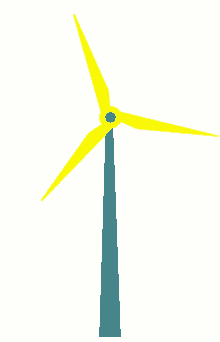

🧠
⚡
Mahathi Gumudavelli
Computer Science - Georgia Tech
Cyber & AI
How I Fell Down the Rabbit Hole
I visited a smart home where technology was invisible. Lights automatically dimmed for a movie, AC adjusted to weather, music followed us room to room.
No commands, no apps, but everything had seamless functionality offering us the "Ambient Experience". This isn't just "AI" but "AmI" allowing for infrastructure that feels psychic.
🏠
How It Works
- Sensor Networks to Gather Data
- Interconnected Web and Internet of Things
- Predictive Behavior to Learn and Improve
Context aware, adapting to changing needs, and offer real-time support.
Healthcare Application
- Stanford study detecting cognitive decline early.
- Microsoft's ambient listening with DAX Copilot
- Non-invasive Patient RT Monitoring
Selective Environments, Clear Consent, and Data Security!

GE Vernova Opportunity
- Integrate AmI into energy infrastructure
- Enable predictive diagnostics and maintenance.
- Optimize energy distribution using context-aware grids
Reducing operational waste, inefficiencies, and unplanned downtime.

Why This Matters to Me
Stanford’s research hits close to home. My grandmother showed early signs
of cognitive decline we missed. I truly believe AmI could have alerted us to unseen changes.